3 机器人操作系统ROS常用组件
3.1 launch
3.1.1 roslaunch定义
roslaunch是一个工具，用于通过SSH在本地和远程轻松启动多个ROS节点和rosmaster，以及在参数服务器上设置参数。它包括自动重生已死亡进程的选项。roslaunch 接收一个或多个 XML 配置文件（扩展名为 .launch），这些文件指定要设置的参数和要启动的节点。
.launch文件一般存放在功能包的launch目录中
3.1.2 标签
<launch>：与</launch>一起组成launch文件的根标签，所有内容都应该包含在根标签内
<node>：用于启动节点，包含以下参数- pkg：节点所在的功能包名称
- type：节点的可执行文件名称（python文件需要包含.py后缀）
- name：节点运行时的名称，可实现节点的重命名
- 可选参数：output（是否在终端输出日志信息，一般赋值“screen”）、respawn（节点关闭是否自动重启）、ns（为节点设置命名空间）、args（加载节点所需参数）
<param>与<rosparam>：<param>用于加载单个参数至参数服务器，包含2个参数：- name：参数名
- value：参数值
<rosparam>常用于直接从文件中加载多个参数至参数服务器，包含3个参数- file：参数文件的路径（.yaml）
- command：（load加载参数|dump保存参数|delete删除参数）默认为load
- ns（可选）：设置命名空间
<arg>：launch文件内部的使用的参数，可实现调用launch文件时动态设置参数，包含2个参数- name：参数名
- value：参数值
<launch>
<arg name="arg-name" default="arg-value" />
<!-- 调用-->
<param name="" value="$(arg arg-name)" />
<node pkg="" type="" name="" args="$(arg arg-name)" />
</launch>
<remap>：重映射ROS计算图资源的命名，包含两个参数- from：原命名
- to：映射之后的命名
<include>：包含其他launch文件，包含一个参数- file：包含的其他launch文件路径
练习
试着创建一个launch文件启动2.5小节的发布者与订阅者节点吧
simple.launch
<launch>
<node pkg="vkrobot_tutorials" type="my_talker.py" name="talker" />
<node pkg="vkrobot_tutorials" type="my_listener.py" name="listener" output="screen" />
</launch>
3.2 TF坐标变换
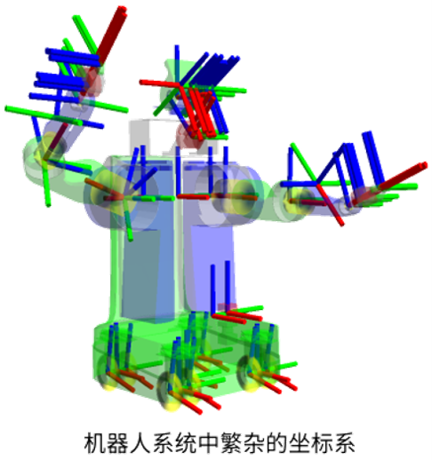
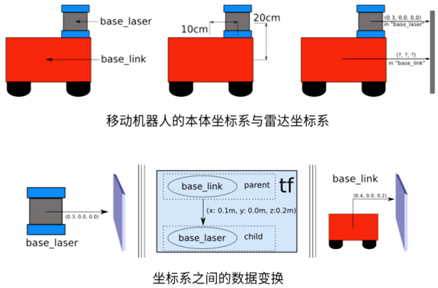
3.2.1 TF工具
我们先来看一个小案例，体会一下tf是什么
- 安装DEMO
vkrobot@vkrobot:~$ sudo apt-get install ros-melodic-ros-tutorials ros-melodic-geometry-tutorials ros-melodic-rviz ros-melodic-rosbash ros-melodic-rqt-tf-tree
- 运行DEMO

一旦 turtlesim 启动，您可以使用键盘方向键在 turtlesim 中控制位于中心的小海龟，选中 roslaunch 终端窗口，以便捕获您的击键以驱动 turtlesim

现在让我们用tf工具来查看tf究竟做了什么
- view_frames
vkrobot@vkrobot:~$ rosrun tf view_frames
Transform Listener initing
Listening to /tf for 5.000000 seconds
Done Listening
dot - Graphviz version 2.16 (Fri Feb 8 12:52:03 UTC 2008)
Detected dot version 2.16
frames.pdf generated
- rqt_tf_tree
rqt_tf_tree是一个实时运行的工具，用于可视化通过 ROS 广播的帧树，您只需通过图表左上角的刷新底部刷新树即可
- tf_echo
tf_echo可以查看通过ROS广播的任意两个坐标系之间的转换
# 用法
rosrun tf tf_echo [reference_frame] [target_frame]
vkrobot@vkrobot:~$ rosrun tf tf_echo turtle1 turtle2
At time 1416409795.450
- Translation: [0.000, 0.000, 0.000]
- Rotation: in Quaternion [0.000, 0.000, 0.914, 0.405]
in RPY [0.000, -0.000, 2.308]
At time 1416409796.441
- Translation: [0.000, 0.000, 0.000]
- Rotation: in Quaternion [0.000, 0.000, 0.914, 0.405]
in RPY [0.000, -0.000, 2.308]
At time 1416409797.450
- Translation: [0.000, 0.000, 0.000]
- Rotation: in Quaternion [0.000, 0.000, 0.914, 0.405]
in RPY [0.000, -0.000, 2.308]
At time 1416409798.441
- Translation: [0.000, 0.000, 0.000]
- Rotation: in Quaternion [0.000, 0.000, 0.914, 0.405]
in RPY [0.000, -0.000, 2.308]
At time 1416409799.433
- Translation: [0.000, 0.000, 0.000]
- Rotation: in Quaternion [0.000, 0.000, 0.691, 0.723]
in RPY [0.000, -0.000, 1.526]
用键盘控制小海龟移动，观察数据的变化
3.2.2 广播器的编程实现
vkrobot@vkrobot:~$ cd ~/catkin_ws/src
vkrobot@vkrobot:~/catkin_ws/src$ catkin_create_pkg learning_tf tf roscpp rospy turtlesim geometry_msgs
vkrobot@vkrobot:~/catkin_ws/src$ cd learning_tf
vkrobot@vkrobot:~/catkin_ws/src/learning_tf$ mkdir scripts
vkrobot@vkrobot:~/catkin_ws/src/learning_tf$ cd scripts
vkrobot@vkrobot:~/catkin_ws/src/learning_tf/scripts$ touch turtle_tf_broadcaster.py
vkrobot@vkrobot:~/catkin_ws/src/learning_tf/scripts$ chmod +x turtle_tf_broadcaster.py #添加可执行权限
vkrobot@vkrobot:~/catkin_ws/src/learning_tf/scripts$ cd ~/catkin_ws
vkrobot@vkrobot:~/catkin_ws$ catkin_make
turtle_tf_broadcaster.py
#!/usr/bin/env python
import rospy
import tf
import turtlesim.msg
# 此函数将广播小海龟的平移和旋转信息，并发布从“world”坐标系到“turtlename”的tf变换
def handle_turtle_pose(msg, turtlename):
br = tf.TransformBroadcaster()
br.sendTransform((msg.x, msg.y, 0),
tf.transformations.quaternion_from_euler(0, 0, msg.theta),
rospy.Time.now(),
turtlename,
"world")
if __name__ '__main__':
rospy.init_node('turtle_tf_broadcaster')
turtlename = rospy.get_param('~turtle') # 该节点采用单个参数“turtle”，该参数指定了海龟名称，例如“turtle1”或“turtle2”
rospy.Subscriber('/%s/pose' % turtlename,
turtlesim.msg.Pose,
handle_turtle_pose,
turtlename) # 该节点订阅话题“[turtlename]/pose”，并针对每条传入的消息调用回调函数“handle_turtle_pose”
rospy.spin()
运行broadcaster节点，这个节点运行需要传递参数，因此我们选择使用launch文件来启动，创建launch/start_demo.launch文件
vkrobot@vkrobot:~$ roscd learning_tf
vkrobot@vkrobot:~/catkin_ws/src/learning_tf$ mkdir launch
vkrobot@vkrobot:~/catkin_ws/src/learning_tf$ touch launch/start_demo.launch
start_demo.launch
<launch>
<!-- Turtlesim Node-->
<node pkg="turtlesim" type="turtlesim_node" name="sim"/>
<node pkg="turtlesim" type="turtle_teleop_key" name="teleop" output="screen"/>
<node pkg="learning_tf" type="turtle_tf_broadcaster.py" name="turtle1_tf_broadcaster" respawn="false" output="screen" >
<param name="turtle" type="string" value="turtle1" />
</node>
<node pkg="learning_tf" type="turtle_tf_broadcaster.py" name="turtle2_tf_broadcaster" respawn="false" output="screen" >
<param name="turtle" type="string" value="turtle2" />
</node>
</launch>
启动：
可以用
tf_echo查看结果
rosrun tf tf_echo /world /turtle1
3.2.3 监听器的编程实现
vkrobot@vkrobot:~$ roscd learning_tf
vkrobot@vkrobot:~/catkin_ws/src/learning_tf$ touch scripts/turtle_tf_listener.py
turtle_tf_listener.py
#!/usr/bin/env python
import rospy
import math
import tf
import geometry_msgs.msg
import turtlesim.srv
if __name__ '__main__':
rospy.init_node('turtle_tf_listener')
listener = tf.TransformListener()
rospy.wait_for_service('spawn')
spawner = rospy.ServiceProxy('spawn', turtlesim.srv.Spawn)
spawner(4, 2, 0, 'turtle2')
turtle_vel = rospy.Publisher('turtle2/cmd_vel', geometry_msgs.msg.Twist,queue_size=1)
rate = rospy.Rate(10.0)
while not rospy.is_shutdown():
try:
(trans,rot) = listener.lookupTransform('/turtle2', '/turtle1', rospy.Time(0))
# trans中存储的是x, y, z三个轴的相对距离
# rot中存储的是四元数变换
except (tf.LookupException, tf.ConnectivityException, tf.ExtrapolationException):
continue
angular = 4 * math.atan2(trans[1], trans[0])
linear = 0.5 * math.sqrt(trans[0] ** 2 + trans[1] ** 2)
cmd = geometry_msgs.msg.Twist()
cmd.linear.x = linear
cmd.angular.z = angular
turtle_vel.publish(cmd)
rate.sleep()
修改start_demo.launch，启动listener节点
3.3 Qt工具箱
安装：
vkrobot@vkrobot:~$ sudo apt-get install ros-melodic-rqt
vkrobot@vkrobot:~$ sudo apt-get install ros-melodic-rqt-common-plugins
3.3.1 日志输出工具——rqt_console

rqt_console是RQT包中的一个查看发布到/rosout的消息。它会随着时间的推移收集消息，并允许您更详细地查看它们，允许您通过各种方式过滤消息。
使用以下命令行启动：rqt_console
3.3.2 计算图可视化工具——rqt_graph

在学习话题通信时我们已经使用过此工具了，此处不再赘述，使用以下命令行启动：rqt_graph
3.3.3 数据绘图工具——rqt_plot
使用以下命令行启动：rqt_plot

在“Topic”中输入话题，然后按“+”按钮即可添加数据
3.4 RVIZ
3.4.1 RVIZ简介
RVIZ是一款三维可视化软件，针对基于ROS软件框架的机器人平台有很好的兼容性。RVIZ主要有以下特点：
- 在RVIZ中，可以使用XML[^1]语言对机器人、周围物体等任何实物进行尺寸、质量、位置、材质、关节等属性的描述，并在界面中呈现出来，这种文件称之为URDF文件
- RVIZ可以通过图形化的方式，实时显示机器人传感器的信息、机器人的运动状态、周围环境的变化等信息
3.4.2 RVIZ数据可视化
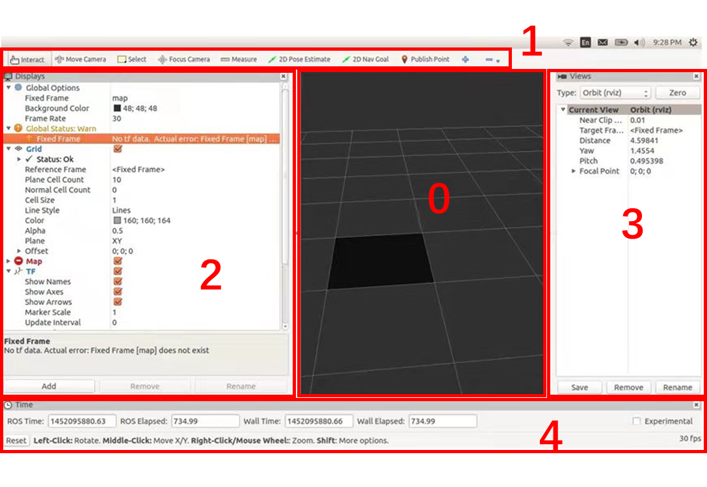
RVIZ中的UI界面分为以下几类：
- 0：3D视图区
- 1：工具栏
- 2：显示项列表
- 3：视角设置区
- 4：时间显示区
3.5 Gazebo
3.5.1 Gazebo简介
Gazebo是一款功能强大的三维物理仿真平台，具有以下特点：
- 具备强大的物理引擎
- 高质量的图形渲染
- 方便的编程与图形接口
- 开源免费
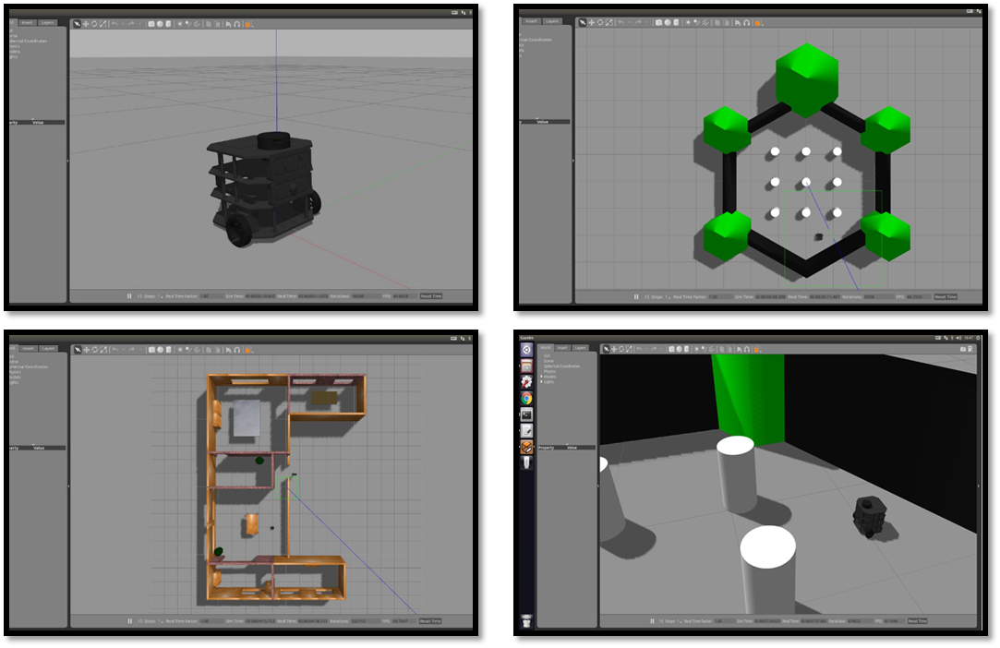
3.5.2 构建仿真环境
默认情况下，Gazebo的默认场景是“empty world”，并没有类似房间、障碍物、道路等仿真物体，那如何在Gazebo中创建仿真环境呢？
Gazebo中创建仿真环境有两种方式：
- 直接添加内置组件创建仿真环境
- 手动绘制仿真环境
添加内置组件创建仿真环境
- 启动Gazebo并添加组件
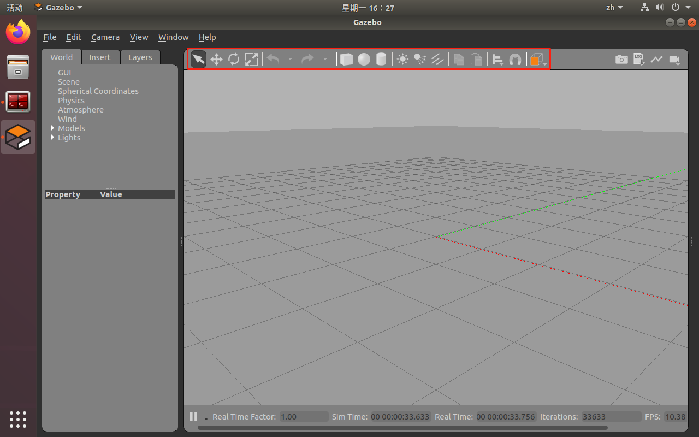
- 保存仿真环境
选择 "File" --> "Save World As"，选择保存路径（功能包路径下创建worlds目录），文件后缀为 .world
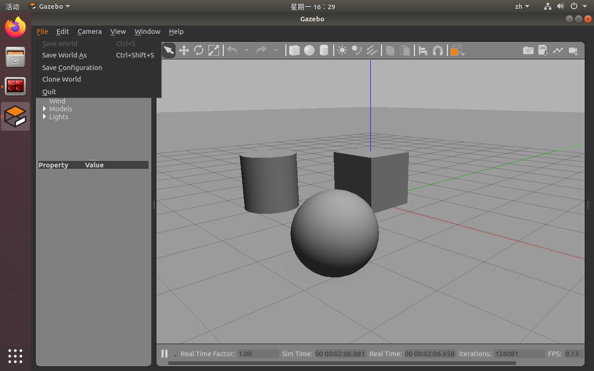
- 启动
创建launch文件启动
<launch>
......
<include file="$(find gazebo_ros)/launch/empty_world.launch">
<arg name="world_name" value="$(find 功能包名)/world/***.world" />
</include>
</launch>
自定义仿真环境
- 启动Gazebo进入“Edit” --> "Building Editor"模式，绘制仿真环境
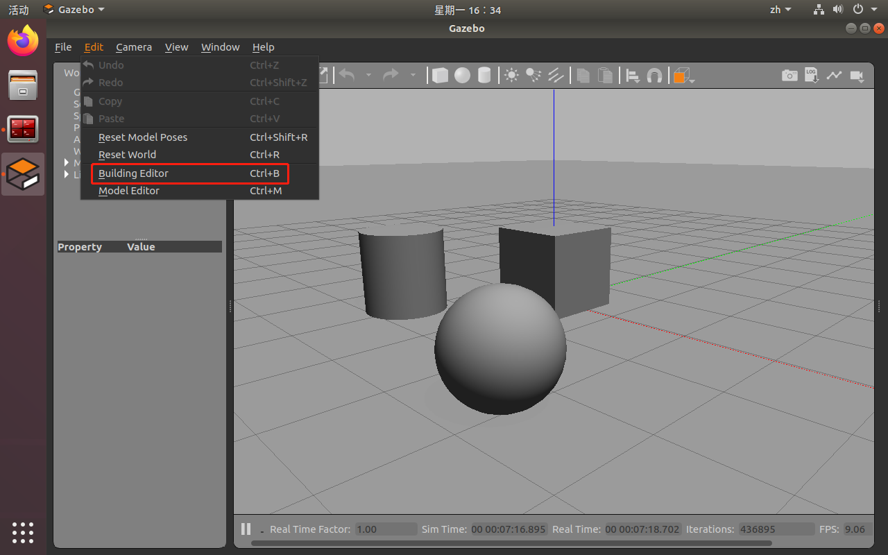
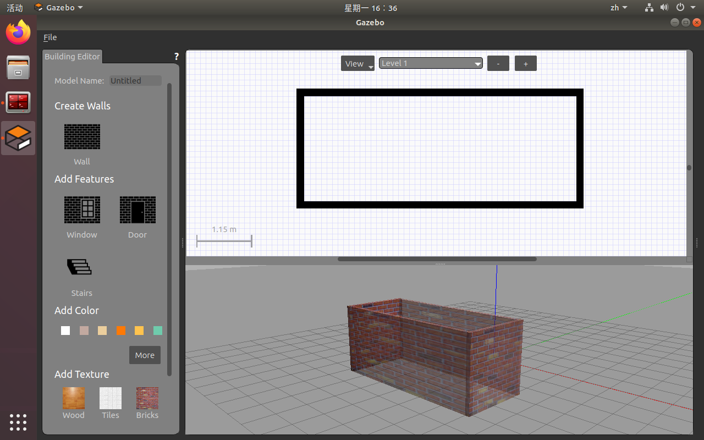
保存仿真环境与启动方式同上
4 机器人建模与仿真
4.1 URDF
4.1.1 简介
URDF（Unified Robot Description Format）——统一机器人描述格式，是一种以XML的方式描述机器人的文件，可以描述机器人的底盘、摄像头、激光雷达、机械臂等，它可以被 C++ 内置的解释器转换成可视化的机器人模型，是ROS中实现机器人仿真的重要组件。
4.1.2 标签
<robot>：根标签，类似launch文件中的标签
属性：
- name：指定机器人模型的名称
<link>：连杆标签，用于描述机器人刚体部分的外观和物理属性，如机器人底盘，轮子，摄像头，激光雷达等

属性：
- name：为连杆命名
子标签：
-
visual --> 描述外观
-
geometry --> 设置刚体几何形状
- box：盒状
属性：size="x y z"
- cylinder：圆柱体
属性：radius="半径" length="长度"
- sphere：球体
属性：radius="半径"
-
origin --> 设置位姿（偏移量&倾斜弧度）
属性：
-
xyz：偏移
-
rpy（欧拉角）：r-翻滚 p-俯仰 y-偏航
-
-
metrial --> 设置材质与颜色
属性：name
- color
属性：rgba——红绿蓝权重与透明度，取值 [0,1]
-
collision --> 描述碰撞属性
-
inertial --> 描述惯性矩阵
<robot name="">
<link name="base_link">
<visual>
<geometry>
<!-- 盒状 -->
<box size="1 1 1" />
<!-- 圆柱体 -->
<cylinder radius="1" length="1" />
<!-- 球体 -->
<sphere radius="1" />
</geometry>
<origin xyz="0 0 0" rpy="0 0 0" />
<material name="black">
<color rgba="1 1 1 1" />
<material>
</visual>
<collision>
<!-- 无特殊要求时与visual标签保持一致 -->
<geometry>
......
</geometry>
<origin xyz="0 0 0" rpy="0 0 0" />
</collision>
<inertial>
......
</inertial>
</link>
</robot>
<joint>：关节标签，用于描述两个刚体间的连接关系

属性：
- name --> 为关节命名
- type --> 关节的类型
- fixed：固定关节，无自由度
- continuous：旋转关节，拥有绕单轴旋转的1个自由度
- revolute：旋转关节，类似于continuous，但是有旋转角度的限制，1个自由度
- prismatic：滑动关节，拥有沿单轴移动的自由度，有位置极限，1个自由度
- planner：平面关节，拥有在平面正交方向上的平移或旋转的自由度，5个自由度
- floating：浮动节点，拥有三轴平移与旋转的6个自由度
子标签：
- parent --> 设置关节的父级连杆
- link --> 父级连杆名称
- child --> 设置关节的子级连杆
- link --> 子级连杆名称
- origin --> 设置关节的偏移量
- axis --> 设置关节围绕哪个轴运动
<robot name="">
<link name="link_1">
......
</link>
<link name="link_2">
......
</link>
<joint name="joint_name" type="continuous">
<parent link="link_1" />
<child link="link_2" />
<!-- 计算两个连杆的物理中心偏移量 -->
<origin xyz="0 0 0" rpy="0 0 0" />
<axis xyz="0 1 0">
</joint>
</robot>
<gazebo>：集成Gazebo时需要使用的标签
4.1.3 创建URDF模型
- 新建功能包并导入依赖，包括：
urdf、xacro、gaezbo_ros、gazebo_ros_control、gazebo_plugins - 新建urdf目录用来保存urdf文件
- 新建urdf文件编写机器人模型
vkrobot@vkrobot:~$ cd catkin_ws/src
vkrobot@vkrobot:~/catkin_ws/src$ catkin_create_pkg learning_urdf urdf xacro gazebo_ros gazebo_ros_control gazebo_plugins
vkrobot@vkrobot:~/catkin_ws/src$ mkdir learning_urdf/urdf
vkrobot@vkrobot:~/catkin_ws/src$ touch learning_urdf/urdf/my_car.urdf
my_car.urdf
<robot name="my_car">
<link name="base_footprint">
<visual>
<geometry>
<sphere radius="0.001" />
</geometry>
</visual>
</link>
<joint name="base_link2base_footprint" type="fixed">
<parent link="base_footprint" />
<child link="base_link" />
<origin xyz="0 0 0.085" />
</joint>
<link name="base_link">
<visual>
<geometry>
<cylinder radius="0.1" length="0.15" />
</geometry>
<material name="red">
<color rgba="1 0 0 0.5" />
</material>
</visual>
</link>
<link name="left_wheel">
<visual>
<geometry>
<cylinder radius="0.03" length="0.015" />
</geometry>
<origin xyz="0 0 0" rpy="1.5708 0 0" />
<material name="black">
<color rgba="0 0 0 1" />
</material>
</visual>
</link>
<joint name="left_wheel2base_link" type="continuous">
<parent link="base_link" />
<child link="left_wheel" />
<origin xyz="0 0.1 -0.055" />
<axis xyz="0 1 0" />
</joint>
<link name="right_wheel">
<visual>
<geometry>
<cylinder radius="0.03" length="0.015" />
</geometry>
<origin xyz="0 0 0" rpy="1.5708 0 0" />
<material name="black">
<color rgba="0 0 0 1" />
</material>
</visual>
</link>
<joint name="right_wheel2base_link" type="continuous">
<parent link="base_link" />
<child link="right_wheel" />
<origin xyz="0 -0.1 -0.055" />
<axis xyz="0 1 0" />
</joint>
<link name="front_wheel">
<visual>
<geometry>
<sphere radius="0.01" />
</geometry>
<material name="white">
<color rgba="1 1 1 1" />
</material>
</visual>
</link>
<joint name="front_wheel2base_link" type="continuous">
<parent link="base_link" />
<child link="front_wheel" />
<origin xyz="0.08 0 -0.075" />
<axis xyz="1 1 1" />
</joint>
<link name="back_wheel">
<visual>
<geometry>
<sphere radius="0.01" />
</geometry>
<material name="white">
<color rgba="1 1 1 1" />
</material>
</visual>
</link>
<joint name="back_wheel2base_link" type="continuous">
<parent link="base_link" />
<child link="back_wheel" />
<origin xyz="-0.08 0 -0.075" />
<axis xyz="1 1 1" />
</joint>
<link name="camera">
<visual>
<geometry>
<box size="0.01 0.03 0.03" />
</geometry>
<material name="blue">
<color rgba="0 0 1 1" />
</material>
</visual>
</link>
<joint name="camera2base_link" type="fixed">
<parent link="base_link" />
<child link="camera" />
<origin xyz="0.1 0 0" />
</joint>
<link name="laser">
<visual>
<geometry>
<cylinder radius="0.02" length="0.01" />
</geometry>
<material name="blue">
<color rgba="0 0 1 1" />
</material>
</visual>
</link>
<joint name="laser2base_link" type="fixed">
<parent link="base_link" />
<child link="laser" />
<origin xyz="0 0 0.08" />
</joint>
</robot>
- 新建launch文件启动rviz并加载机器人模型
vkrobot@vkrobot:~/catkin_ws/src$ mkdir learning_urdf/launch
vkrobot@vkrobot:~/catkin_ws/src$ touch learning_urdf/launch/start.launch
start.launch
<launch>
<!-- 加载机器人模型 -->
<param name="robot_description" textfile="$(find learning_urdf)/urdf/my_car.urdf" />
<!-- 启动rviz -->
<node pkg="rviz" type="rviz" name="rviz" args="-d $(find learning_urdf)/config/my_car.rviz" />
<!-- 启动机器人状态发布节点与关节状态发布节点，发布TF -->
<node pkg="robot_state_publisher" type="robot_state_publisher" name="robot_state_publisher" />
<node pkg="joint_state_publisher" type="joint_state_publisher" name="joint_state_publisher" />
</launch>
4.1.4 使用xacro优化urdf文件
概念
Xacro 是 XML Macros 的缩写，是一种可编程的 XML 宏语言
原理
Xacro 可以通过声明变量、封装固定逻辑的方式实现类似函数的功能，从而提高代码的复用率
- 声明变量
<robot name="" xmlns="http://wiki.ros.org/xacro">
<xacro:property name="变量名" value="变量值" />
<!-- 调用 -->
${变量名}
<!-- 数学运算 -->
${数学表达式}
</robot>
- 封装宏
<robot name="" xmlns="http://wiki.ros.org/xacro">
<xacro:macro name="宏名称" params="参数（多个参数之间用空格隔开）">
......
</xacro:macro>
<!-- 调用 -->
<xacro:宏名称 参数1="" 参数2="" />
</robot>
- 文件包含
优化URDF文件
- 新建各部分的xacro文件并整合
vkrobot@vkrobot:~/catkin_ws/src$ touch learning_urdf/urdf/my_base.urdf.xacro
vkrobot@vkrobot:~/catkin_ws/src$ touch learning_urdf/urdf/my_camera.urdf.xacro
vkrobot@vkrobot:~/catkin_ws/src$ touch learning_urdf/urdf/my_laser.urdf.xacro
vkrobot@vkrobot:~/catkin_ws/src$ touch learning_urdf/urdf/my_car.urdf.xacro
my_base.urdf.xacro
<robot name="my_car" xmlns:xacro="http://wiki.ros.org/xacro">
<link name="base_footprint">
<visual>
<geometry>
<sphere radius="0.001" />
</geometry>
</visual>
</link>
<xacro:property name="lidi" value="0.01" />
<xacro:property name="base_radius" value="0.1" />
<xacro:property name="base_length" value="0.15" />
<xacro:property name="wheel_radius" value="0.03" />
<xacro:property name="wheel_length" value="0.015" />
<xacro:property name="PI" value="3.1415927" />
<joint name="base_link2base_footprint" type="fixed">
<parent link="base_footprint" />
<child link="base_link" />
<origin xyz="0 0 ${base_length/2+lidi}" />
</joint>
<link name="base_link">
<visual>
<geometry>
<cylinder radius="${base_radius}" length="${base_length}" />
</geometry>
<material name="red">
<color rgba="0 0 0 0.5" />
</material>
</visual>
</link>
<xacro:macro name="wheel_func" params="wheel_name flag">
<link name="${wheel_name}_wheel">
<visual>
<geometry>
<cylinder radius="${wheel_radius}" length="${wheel_length}" />
</geometry>
<origin xyz="0 0 0" rpy="${PI/2} 0 0" />
<material name="black">
<color rgba="0 0 0 1" />
</material>
</visual>
</link>
<joint name="${wheel_name}_wheel2base_link" type="continuous">
<parent link="base_link" />
<child link="${wheel_name}_wheel" />
<origin xyz="0 ${flag*base_radius} ${-(lidi+base_length/2-wheel_radius)}" />
<axis xyz="0 1 0" />
</joint>
</xacro:macro>
<xacro:wheel_func wheel_name="left" flag="1" />
<xacro:wheel_func wheel_name="right" flag="-1" />
<xacro:property name="universal_wheel_radius" value="0.01" />
<xacro:macro name="universal_wheel_func" params="wheel_name flag">
<link name="${wheel_name}_wheel">
<visual>
<geometry>
<sphere radius="${universal_wheel_radius}" />
</geometry>
<material name="white">
<color rgba="1 1 1 1" />
</material>
</visual>
</link>
<joint name="${wheel_name}_wheel2base_link" type="continuous">
<parent link="base_link" />
<child link="${wheel_name}_wheel" />
<origin xyz="${flag*(base_radius-0.02)} 0 ${-(base_length/2+lidi-universal_wheel_radius)}" />
<axis xyz="1 1 1" />
</joint>
</xacro:macro>
<xacro:universal_wheel_func wheel_name="front" flag="1" />
<xacro:universal_wheel_func wheel_name="back" flag="-1" />
</robot>
my_camera.urdf.xacro
<robot name="my_camera" xmlns:xacro="http://wiki.ros.org/xacro">
<xacro:property name="camera_length" value="0.01" />
<xacro:property name="camera_width" value="0.03" />
<xacro:property name="camera_height" value="0.03" />
<xacro:property name="camera_x" value="${base_radius}" />
<xacro:property name="camera_y" value="0" />
<xacro:property name="camera_z" value="0" />
<link name="camera">
<visual>
<geometry>
<box size="${camera_length} ${camera_width} ${camera_height}" />
</geometry>
<material name="blue">
<color rgba="0 0 1 1" />
</material>
</visual>
</link>
<joint name="camera2base_link" type="fixed">
<parent link="base_link" />
<child link="camera" />
<origin xyz="${camera_x} ${camera_y} ${camera_z}" />
</joint>
</robot>
my_laser.urdf.xacro
<robot name="my_laser" xmlns:xacro="http://wiki.ros.org/xacro">
<xacro:property name="laser_radius" value="0.02" />
<xacro:property name="laser_length" value="0.01" />
<link name="laser">
<visual>
<geometry>
<cylinder radius="${laser_radius}" length="${laser_length}" />
</geometry>
<material name="blue">
<color rgba="0 0 1 1" />
</material>
</visual>
</link>
<joint name="laser2base_link" type="fixed">
<parent link="base_link" />
<child link="laser" />
<origin xyz="0 0 ${(base_length+laser_length)/2}" />
</joint>
</robot>
my_car.urdf.xacro
<robot name="my_car" xmlns:xacro="http://wiki.ros.org/xacro">
<xacro:include filename="my_base.urdf.xacro" />
<xacro:include filename="my_camera.urdf.xacro" />
<xacro:include filename="my_laser.urdf.xacro" />
</robot>
- 新建launch文件加载xacro模型
start_xacro.launch
<launch>
<param name="robot_description" command="$(find xacro)/xacro $(find demo_urdf)/urdf/my_car.urdf.xacro" />
<node pkg="rviz" type="rviz" name="rviz" args="-d $(find demo_urdf)/config/my_car.rviz" />
<node pkg="robot_state_publisher" type="robot_state_publisher" name="robot_state_publisher" />
<node pkg="joint_state_publisher" type="joint_state_publisher" name="joint_state_publisher" />
</launch>
4.2 Gazebo仿真
4.2.1 机器人模型添加gazebo属性
当URDF需要与Gazebo集成时，必须要添加
<collision>与<inertial>标签，并且使用<gazebo>标签重新设置link颜色
vkrobot@vkrobot:~/catkin_ws/src$ touch learning_urdf/urdf/base_collision.urdf.xacro
vkrobot@vkrobot:~/catkin_ws/src$ touch learning_urdf/urdf/my_base_gazebo.urdf.xacro
vkrobot@vkrobot:~/catkin_ws/src$ touch learning_urdf/urdf/my_camera_gazebo.urdf.xacro
vkrobot@vkrobot:~/catkin_ws/src$ touch learning_urdf/urdf/my_laser_gazebo.urdf.xacro
vkrobot@vkrobot:~/catkin_ws/src$ touch learning_urdf/urdf/my_car_gazebo.urdf.xacro
base_collision.urdf.xacro ---> 封装惯性矩阵算法的xacro文件
<robot name="my_car" xmlns:xacro="http://wiki.ros.org/xacro">
<xacro:macro name="sphere_inertial_matrix" params="m r">
<inertial>
<mass value="${m}" />
<inertia ixx="${2*m*r*r/5}" ixy="0" ixz="0"
iyy="${2*m*r*r/5}" iyz="0"
izz="${2*m*r*r/5}" />
</inertial>
</xacro:macro>
<xacro:macro name="cylinder_inertial_matrix" params="m r h">
<inertial>
<mass value="${m}" />
<inertia ixx="${m*(3*r*r+h*h)/12}" ixy="0" ixz="0"
iyy="${m*(3*r*r+h*h)}" iyz="0"
izz="${m*r*r/2}" />
</inertial>
</xacro:macro>
<xacro:macro name="box_inertial_matrix" params="m l w h">
<inertial>
<mass value="${m}" />
<inertia ixx="${m*(h*h+l*l)/12}" ixy="0" ixz="0"
iyy="${m*(w*w+l*l)/12}" iyz="0"
izz="${m*(w*w+h*h)/12}" />
</inertial>
</xacro:macro>
</robot>
my_base_gazebo.urdf.xacro
<robot name="my_car" xmlns:xacro="http://wiki.ros.org/xacro">
<link name="base_footprint">
<visual>
<geometry>
<sphere radius="0.001" />
</geometry>
</visual>
</link>
<gazebo reference="base_footprint">
<turnGravityOff>false</turnGravityOff>
</gazebo>
<xacro:property name="lidi" value="0.01" />
<xacro:property name="base_radius" value="0.1" />
<xacro:property name="base_length" value="0.15" />
<xacro:property name="wheel_radius" value="0.03" />
<xacro:property name="wheel_length" value="0.015" />
<xacro:property name="PI" value="3.1415927" />
<xacro:property name="base_link_m" value="3.5" />
<xacro:property name="wheel_m" value="0.05" />
<joint name="base_link2base_footprint" type="fixed">
<parent link="base_footprint" />
<child link="base_link" />
<origin xyz="0 0 ${base_length/2+lidi}" />
</joint>
<link name="base_link">
<visual>
<geometry>
<cylinder radius="${base_radius}" length="${base_length}" />
</geometry>
<material name="red">
<color rgba="0 0 0 0.5" />
</material>
</visual>
<collision>
<geometry>
<cylinder radius="${base_radius}" length="${base_length}" />
</geometry>
</collision>
<xacro:cylinder_inertial_matrix m="${base_link_m}" r="${base_radius}" h="${base_length}" />
</link>
<gazebo reference="base_link">
<material>Gazebo/Gray</material>
</gazebo>
<xacro:macro name="wheel_func" params="wheel_name flag">
<link name="${wheel_name}_wheel">
<visual>
<geometry>
<cylinder radius="${wheel_radius}" length="${wheel_length}" />
</geometry>
<origin xyz="0 0 0" rpy="${PI/2} 0 0" />
<material name="black">
<color rgba="0 0 0 1" />
</material>
</visual>
<collision>
<geometry>
<cylinder radius="${wheel_radius}" length="${wheel_length}" />
</geometry>
<origin xyz="0 0 0" rpy="${PI/2} 0 0" />
</collision>
<xacro:cylinder_inertial_matrix m="${wheel_m}" r="${wheel_radius}" h="${wheel_length}" />
</link>
<gazebo reference="${wheel_name}_wheel">
<material>Gazebo/Black</material>
</gazebo>
<joint name="${wheel_name}_wheel2base_link" type="continuous">
<parent link="base_link" />
<child link="${wheel_name}_wheel" />
<origin xyz="0 ${flag*base_radius} ${-(lidi+base_length/2-wheel_radius)}" />
<axis xyz="0 1 0" />
</joint>
</xacro:macro>
<xacro:wheel_func wheel_name="left" flag="1" />
<xacro:wheel_func wheel_name="right" flag="-1" />
<xacro:property name="universal_wheel_radius" value="0.01" />
<xacro:property name="universal_wheel_m" value="0.03" />
<xacro:macro name="universal_wheel_func" params="wheel_name flag">
<link name="${wheel_name}_wheel">
<visual>
<geometry>
<sphere radius="${universal_wheel_radius}" />
</geometry>
<material name="white">
<color rgba="1 1 1 1" />
</material>
</visual>
<collision>
<geometry>
<sphere radius="${universal_wheel_radius}" />
</geometry>
</collision>
<xacro:sphere_inertial_matrix m="${universal_wheel_m}" r="${universal_wheel_radius}" />
</link>
<gazebo reference="${wheel_name}_wheel">
<material>Gazebo/White</material>
</gazebo>
<joint name="${wheel_name}_wheel2base_link" type="continuous">
<parent link="base_link" />
<child link="${wheel_name}_wheel" />
<origin xyz="${flag*(base_radius-0.02)} 0 ${-(base_length/2+lidi-universal_wheel_radius)}" />
<axis xyz="0 1 0" />
</joint>
</xacro:macro>
<xacro:universal_wheel_func wheel_name="front" flag="1" />
<xacro:universal_wheel_func wheel_name="back" flag="-1" />
</robot>
my_camera_gazebo.urdf.xacro
<robot name="my_camera" xmlns:xacro="http://wiki.ros.org/xacro">
<xacro:property name="camera_length" value="0.01" />
<xacro:property name="camera_width" value="0.03" />
<xacro:property name="camera_height" value="0.03" />
<xacro:property name="camera_x" value="${base_radius}" />
<xacro:property name="camera_y" value="0" />
<xacro:property name="camera_z" value="0" />
<xacro:property name="camera_m" value="0.01" />
<link name="camera">
<visual>
<geometry>
<box size="${camera_length} ${camera_width} ${camera_height}" />
</geometry>
<material name="blue">
<color rgba="0 0 1 1" />
</material>
</visual>
<collision>
<geometry>
<box size="${camera_length} ${camera_width} ${camera_height}" />
</geometry>
</collision>
<xacro:box_inertial_matrix m="${camera_m}" l="${camera_length}" w="${camera_width}" h="${camera_height}" />
</link>
<gazebo reference="camera">
<material>Gazebo/Blue</material>
</gazebo>
<joint name="camera2base_link" type="fixed">
<parent link="base_link" />
<child link="camera" />
<origin xyz="${camera_x} ${camera_y} ${camera_z}" />
</joint>
</robot>
my_laser_gazebo.urdf.xacro
<robot name="my_laser" xmlns:xacro="http://wiki.ros.org/xacro">
<xacro:property name="laser_radius" value="0.02" />
<xacro:property name="laser_length" value="0.01" />
<xacro:property name="laser_m" value="0.1" />
<link name="laser">
<visual>
<geometry>
<cylinder radius="${laser_radius}" length="${laser_length}" />
</geometry>
<material name="blue">
<color rgba="0 0 1 1" />
</material>
</visual>
<collision>
<geometry>
<cylinder radius="${laser_radius}" length="${laser_length}" />
</geometry>
</collision>
<xacro:cylinder_inertial_matrix m="${laser_m}" r="${laser_radius}" h="${laser_length}" />
</link>
<gazebo reference="laser">
<material>Gazebo/Blue</material>
</gazebo>
<joint name="laser2base_link" type="fixed">
<parent link="base_link" />
<child link="laser" />
<origin xyz="0 0 ${(base_length+laser_length)/2}" />
</joint>
</robot>
my_car_gazebo.urdf.xacro
<robot name="my_car" xmlns:xacro="http://wiki.ros.org/xacro">
<xacro:include filename="base_collision.urdf.xacro" />
<xacro:include filename="my_base_gazebo.urdf.xacro" />
<xacro:include filename="my_camera_gazebo.urdf.xacro" />
<xacro:include filename="my_laser_gazebo.urdf.xacro" />
</robot>
4.2.2 在gazebo中显示机器人模型
新建launch文件启动gazebo,并加载机器人模型
start_gazebo.launch
<launch>
<param name="robot_description" command="$(find xacro)/xacro $(find demo_urdf)/urdf/my_car_gazebo.urdf.xacro" />
<include file="$(find gazebo_ros)/launch/empty_world.launch" />
<node pkg="gazebo_ros" type="spawn_model" name="model" args="-urdf -model mycar -param robot_description" />
<node pkg="rviz" type="rviz" name="rviz" args="-d $(find demo_urdf)/config/my_car.rviz" />
<node pkg="robot_state_publisher" type="robot_state_publisher" name="robot_state_publisher" />
<node pkg="joint_state_publisher" type="joint_state_publisher" name="joint_state_publisher" />
</launch>
4.2.3 控制机器人在gazebo中运动
gazebo 中已经可以正常显示机器人模型了，那么如何控制机器人运动呢?这需要用到ros中的组件：ros_control
ros_control简介
ros_control是一组软件包，包括控制器接口、控制器管理、传输和硬件接口。gazebo已经实现了ros_control的相关接口，如果需要在gazebo中控制机器人运动，直接调用相关接口即可。
插件接口参考：Gazebo : Tutorial : Gazebo plugins in ROS (gazebosim.org)
- 为驱动轮关节添加传动装置及控制器
move.urdf.xacro
<robot name="my_car" xmlns:xacro="http://wiki.ros.org/xacro">
<xacro:macro name="joint_trans" params="joint_name">
<transmission name="${joint_name}_trans">
<type>transmission_interface/SimpleTransmission</type>
<joint name="${joint_name}">
<hardwareInterface>hardware_interface/VelocityJointInterface</hardwareInterface>
</joint>
<actuator name="${joint_name}_motor">
<hardwareInterface>hardware_interface/VelocityJointInterface</hardwareInterface>
<mechanicalReduction>1</mechanicalReduction>
</actuator>
</transmission>
</xacro:macro>
<xacro:joint_trans joint_name="left_wheel2base_link" />
<xacro:joint_trans joint_name="right_wheel2base_link" />
<gazebo>
<plugin name="differential_drive_controller" filename="libgazebo_ros_diff_drive.so">
<rosDebugLevel>Debug</rosDebugLevel>
<publishWheelTF>true</publishWheelTF>
<robotNamespace>/</robotNamespace>
<publishTf>1</publishTf>
<publishWheelJointState>true</publishWheelJointState>
<alwaysOn>true</alwaysOn>
<updateRate>100.0</updateRate>
<legacyMode>true</legacyMode>
<leftJoint>left_wheel2base_link</leftJoint>
<rightJoint>right_wheel2base_link</rightJoint>
<wheelSeparation>${base_radius * 2}</wheelSeparation>
<wheelDiameter>${wheel_radius * 2}</wheelDiameter>
<broadcastTF>1</broadcastTF>
<wheelTorque>30</wheelTorque>
<wheelAcceleration>1.8</wheelAcceleration>
<commandTopic>cmd_vel</commandTopic>
<odometryFrame>odom</odometryFrame>
<odometryTopic>odom</odometryTopic>
<robotBaseFrame>base_footprint</robotBaseFrame>
</plugin>
</gazebo>
</robot>
- 将
move.urdf.xacro集成到my_car_gazebo.urdf.xacro
my_car_gazebo.urdf.xacro
<robot name="my_car" xmlns:xacro="http://wiki.ros.org/xacro">
......
<xacro:include filename="move.urdf.xacro" />
</robot>
-
start_gazebo.launch文件不需要修改即可启动 -
启动键盘控制节点，控制小车运动
安装：sudo apt-get install ros-melodic-teleop-twist-keyboard
启动：rosrun teleop_twist_keyboard teleop_twist_keyboard.py
4.2.4 摄像头仿真
- 配置摄像头传感器信息
camera.urdf.xacro
<robot name="my_sensors" xmlns:xacro="http://wiki.ros.org/xacro">
<gazebo reference="camera">
<sensor type="camera" name="camera_node">
<update_rate>30.0</update_rate>
<camera name="head">
<horizontal_fov>1.3962634</horizontal_fov>
<image>
<width>1280</width>
<height>720</height>
<format>R8G8B8</format>
</image>
<clip>
<near>0.02</near>
<far>300</far>
</clip>
<noise>
<type>gaussian</type>
<mean>0.0</mean>
<stddev>0.007</stddev>
</noise>
</camera>
<plugin name="gazebo_camera" filename="libgazebo_ros_camera.so">
<alwaysOn>true</alwaysOn>
<updateRate>0.0</updateRate>
<cameraName>/camera</cameraName>
<imageTopicName>image_raw</imageTopicName>
<cameraInfoTopicName>camera_info</cameraInfoTopicName>
<frameName>camera</frameName>
<hackBaseline>0.07</hackBaseline>
<distortionK1>0.0</distortionK1>
<distortionK2>0.0</distortionK2>
<distortionK3>0.0</distortionK3>
<distortionT1>0.0</distortionT1>
<distortionT2>0.0</distortionT2>
</plugin>
</sensor>
</gazebo>
</robot>
- 将
camera.urdf.xacro集成到my_car_gazebo.urdf.xacro
my_car_gazebo.urdf.xacro
<robot name="my_car" xmlns:xacro="http://wiki.ros.org/xacro">
......
<xacro:include filename="camera.urdf.xacro" />
</robot>
-
start_gazebo.launch文件不需要修改即可启动 -
启动键盘控制节点，控制小车运动
安装：sudo apt-get install ros-melodic-teleop-twist-keyboard
启动：rosrun teleop_twist_keyboard teleop_twist_keyboard.py
U-往左前方 I-往正前方 O-往右前方
J-原地左转 K-停止运动 L-原地右转
M-往左后方 ,-往正后方 .-往右后方
4.2.5 激光雷达仿真
- 配置激光雷达传感器信息
laser.urdf.xacro
<robot name="my_sensors" xmlns:xacro="http://wiki.ros.org/xacro">
<gazebo reference="laser">
<sensor type="ray" name="rplidar">
<pose>0 0 0 0 0 0</pose>
<visualize>true</visualize>
<update_rate>5</update_rate>
<ray>
<scan>
<horizontal>
<samples>360</samples>
<resolution>1</resolution>
<min_angle>-3</min_angle>
<max_angle>3</max_angle>
</horizontal>
</scan>
<range>
<min>0.10</min>
<max>30.0</max>
<resolution>0.01</resolution>
</range>
<noise>
<type>gaussian</type>
<mean>0.0</mean>
<stddev>0.01</stddev>
</noise>
</ray>
<plugin name="gazebo_rplidar" filename="libgazebo_ros_laser.so">
<topicName>/scan</topicName>
<frameName>laser</frameName>
</plugin>
</sensor>
</gazebo>
</robot>
- 将
laser.urdf.xacro集成到my_car_gazebo.urdf.xacro
my_car_gazebo.urdf.xacro
<robot name="my_car" xmlns:xacro="http://wiki.ros.org/xacro">
......
<xacro:include filename="laser.urdf.xacro" />
</robot>
-
start_gazebo.launch文件不需要修改即可启动 -
启动键盘控制节点，控制小车运动
安装：sudo apt-get install ros-melodic-teleop-twist-keyboard
启动：rosrun teleop_twist_keyboard teleop_twist_keyboard.py
5 机器人平台搭建
前面的章节主要讲解了ROS的基础知识，内容更偏理论，学习完后想必各位会有些疑惑：
- 什么是机器人？
- 实体机器人与仿真实现有什么区别？
- 如何构建一个真实的机器人系统？
- ...
5.1 机器人的定义
1920年，捷克作家卡雷尔·凯佩克（Karel Capek）发表了科幻剧本《罗萨姆的万能机器人》。在剧本中，凯佩克把捷克语“Robota”写成了“Robot”，“Robota”是奴隶的意思。该剧预告了机器人的发展对人类社会的悲剧性影响，引起了人们的广泛关注，被当成了“机器人”一词的起源。
机器人（Robot）是自动执行工作的机器装置。机器人可接受人类指挥，也可以执行预先编排的程序，也可以根据以人工智能技术制定的原则纲领行动。机器人执行的是取代或是协助人类工作的工作，例如制造业、建筑业，或是危险的工作。
百度百科

5.2 机器人的组成
机器人是一套机电一体化的设备，角度不同，对机器人组成的认识也会有明显差异，从控制的角度来看，机器人系统可以分为四大部分，即执行机构、驱动系统、传感系统和控制系统。各部分之间的控制关系如下图：

5.2.1 执行机构
执行机构是机器人组成中直接面向工作对象的机械装置，类似于人体的手与脚，比如机器人的行走部分与机械臂。
在当前机器人系统中，执行机构主要有：由两个轮毂电机带动的主动轮以及保持平衡的万向轮，实现机器人的行走；一个三轴机械臂，实现机器人的抓取。
5.2.2 驱动系统
驱动系统负责驱动执行机构，将控制系统下达的指令转换成执行机构所需要的信号，相当于人的肌肉。根据采用的动力源不用，驱动系统的传动方式也不同，主要有四种：液压式、气压式、电气式和机械式。其中，电力驱动是目前使用最广泛的一种驱动方式，其特点是取电方便、响应快、驱动力大等，并且可以采用多种灵活的控制方式。
在当前的机器人系统中，驱动系统采用stm32，负责采集陀螺仪IMU、超声波、左右轮电机编码器等传感器数据，并驱动电机转动。
5.2.3 传感系统
传感系统由外部传感器模块与内部传感器模块组成，用于获取外部环境与内部有用的信息，相当于人体的感官与神经。常用的外部传感器包括摄像头、红外、激光雷达等，用于感知外部环境；内部传感器包括编码器、陀螺仪等，可以通过自身信号反馈检测位姿状态。
在当前机器人系统中，传感系统主要有：EAI G4型号的激光雷达，可实现360°的旋转测距；环形麦克风阵列模块，可实现360°的等效拾音；鱼眼摄像头与深度相机，可实现图像数据的获取。
5.2.4 控制系统
控制系统的任务是根据机器人的作业指令以及从传感器反馈回来的信号，作出相应处理并输出控制指令信号，相当于人体的大脑。控制系统需要基于处理器实现，一般常用的有ARM、x86等架构的处理器。在处理器之上，控制系统需要完成算法处理、关节控制、人机交互等复杂的功能。
在当前机器人系统中，控制系统采用Intel NUC工控机，安装了Ubuntu系统，同时搭建了机器人操作系统ROS环境，主要负责上层计算量较大的应用，可扩展性强。
5.3 视觉
摄像头是机器人系统中一个比较重要的传感器，也是机器人感知外界环境的重要手段之一，并且随着机器视觉、无人驾驶等技术的兴起，摄像头在物体识别、SLAM等技术中都有着广泛的应用前景。
摄像头可以根据工作原理大致划分为三类：单目摄像头、双目摄像头以及深度摄像头。
- 单目摄像头
单目摄像头是将三维世界二维化，只能获取物体在摄像机成像平面上的投影，在静止状态下无法获取深度信息，也就无法根据物体的大小来判断距离。

- 双目摄像头
双目摄像头顾名思义就是由两个单目相机组合而成的摄像头，可以通过两个单目相机之间存在的固定距离（基线）来估计摄像头与目标物体之间的距离。
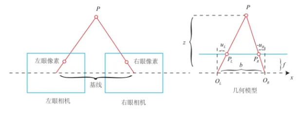
- 深度摄像头
深度摄像头又称为RGB-D摄像头，此处的D就是Depth（深度），顾名思义，它可以获取物体的深度信息。深度摄像头一般基于结构光法或飞行时间（ToF）法来实现测距。
前者是为了解决双目匹配问题产生的，解决对环境光照敏感的问题；后者是通过发射一束光脉冲，然后经过物体反射回去，再接收到光脉冲，通过飞行时间来计算被测物体与摄像头的距离。
5.3.1 摄像头的使用
-
硬件准备：直接通过USB接入虚拟机即可，需注意虚拟机的相关设置。
-
软件准备：安装USB摄像头软件包
sudo apt-get install ros-melodic-usb-cam
或者直接从github下载源码
git clone https://github.com/ros-drivers/usb_cam.git
- 测试
软件包中内置了测试用的launch文件，具体内容如下：
<launch>
<node name="usb_cam" pkg="usb_cam" type="usb_cam_node" output="screen" >
<param name="video_device" value="/dev/vkarm_camera_raw" />
<param name="image_width" value="1280" />
<param name="image_height" value="720" />
<param name="pixel_format" value="yuyv" />
<param name="camera_frame_id" value="usb_cam" />
<param name="io_method" value="mmap"/>
</node>
<node name="image_view" pkg="image_view" type="image_view" respawn="false" output="screen">
<remap from="image" to="/usb_cam/image_raw"/>
<param name="autosize" value="true" />
</node>
</launch>
这个launch文件启动了两个节点：usb_cam与image_view。前者用于启动相机，后者以图形化窗口的方式显示图像数据，使用前需要查看相机的端口并修改usb_cam中的”video_device“参数。
查看端口的命令行：
ls -l /dev/video*
5.3.1 ROS中的图像数据
无论是USB摄像头还是RGB-D摄像头，发布的图像数据格式是多种多样的，在处理这些数据之前，我们需要先了解这些数据的格式。
连接USB摄像头到虚拟机，通过以下命令启动摄像头，注意修改端口号：
roslaunch usb_cam usb_cam-test.launch
启动成功后，使用以下命令查看当前系统中的图像话题信息：
rostopic info /usb_cam/image_raw
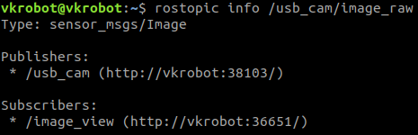
从终端打印的信息中可以得知，图像话题的消息类型是sensor_msgs/Imgae，这是ROS提供的一种摄像头原视图像的消息类型，使用以下命令查看该消息类型更详细的内容：
rosmsg show sensor_msgs/Image
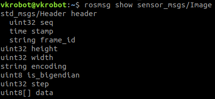
- header：消息头，包含图像的序列号、时间戳和绑定的坐标系
- height：图像的纵向分辨率，即图像包含多少行的像素点
- width：图像的横向分辨率，即图像包含多少列的像素点
- encoding：图像的编码格式，常用的有：RGB、YUV等
- is_bigendian：图像数据的大小端存储模式（Big-Endian/Little-Endian）
- step：一行图像数据的字节数量，作为数据的步长参数，一般为width×3
- data：存储图像数据的数组，大小为 step × height
根据公式，计算得出一帧720×1280分辨率的图像数据量为width×3×height=1280×3×720=2764800字节=2.7648MB，若按照30帧/秒的帧率计算，那么一秒钟摄像头产生的数据量是十分庞大的。在实际应用，尤其是远程传输图像的场景中，会对无线网络造成很大的压力，因此往往需要对图像进行压缩处理，ROS也提供了压缩图像的消息类型sensor_msgs/CompressedImage，使用以下你命令查看更详细的内容：
rosmsg show sensor_msgs/CompressedImage
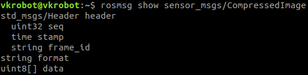
- header：消息头，包含图像的序列号、时间戳和绑定的坐标系
- format：图像的压缩编码格式，包括：JPEG、PNG、BMP等
- data：存储图像数据的数组
5.3.3 摄像头标定
摄像头是一种对光学器件要求较高的精密仪器，然而，由于摄像头的一些硬件原因，生成的物体图像往往会产生畸变，为了避免数据源造成的误差，需要针对摄像头的参数进行标定。ROS官方提供了用于单/双目摄像头标定的功能包——camera_calibration。
1.安装
使用以下命令安装此功能包：
sudo apt-get install ros-melodic-camera-calibration
标定需要用到如下图所示的棋盘格图案的标定板：
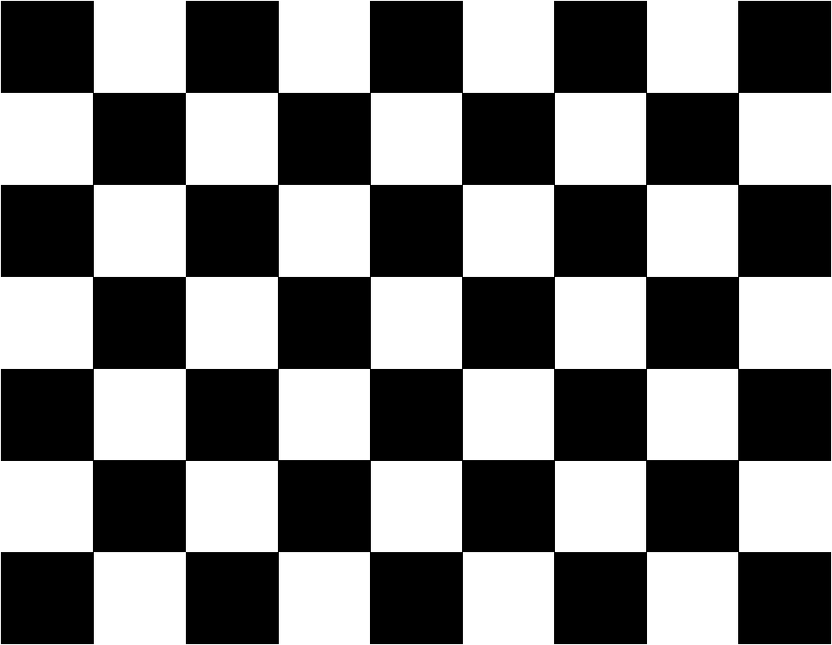
2.启动
接着启动摄像头与标定程序：
rosrun camera_calibration cameracalibrator.py --size 8x6 --square 0.024 image:=/usb_cam/image_raw camera:=/usb_cam
摄像头的启动参考
5.3.1
cameracalibrator.py标定程序需要以下几个输入参数：
- size：标定棋盘格的内部角点个数
- square：每个棋盘格的边长，单位是m
- image和camera：设置摄像头发布的图像话题以及使用的摄像头
3.标定
标定程序启动后，将标定板放置在摄像头视野范围内，画面如下图所示：
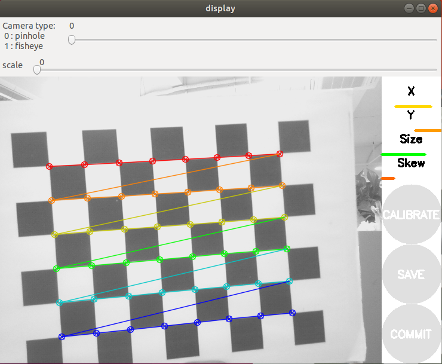
画面右上角的进图条表示了不同的标定进度：
- X：标定板在摄像头视野中左右移动
- Y：标定板在摄像头视野中上下移动
- Size：标定板在摄像头视野中前后移动
- Skew：标定板在摄像头视野中倾斜转动
不断在摄像头视野中移动/转动标定板，直到“CALIBRATE”按钮激活，表示标定程序的参数采集完成。
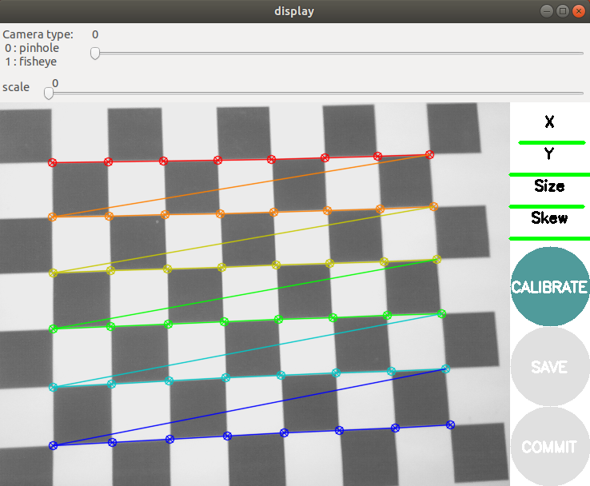
点击“CALIBRATE”按钮，程序开始自动计算摄像头的标定参数，这个过程需要等待一段时间，此时界面会变成灰色无响应状态，注意观察终端会有标定结果的显示，并且标定界面的“SAVE”与“COMMIT”按钮激活，如下图：
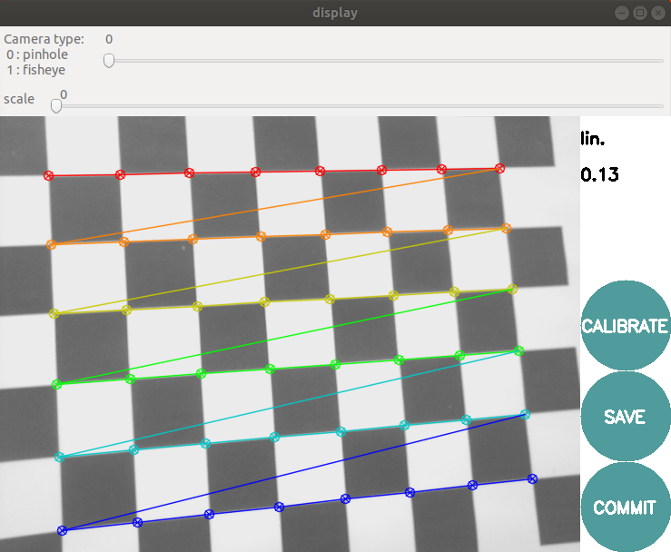
点击“SAVE”按钮，标定参数将被保存到默认的文件夹下，在终端中可以看到此路径：
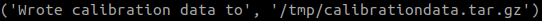
点击“COMMIT”按钮，提交数据并退出程序，然后招到标定结果的压缩文件calibrationdata.tar.gz，解压该文件后，找到ost.yaml命名的标定结果文件，将其复制出来备用
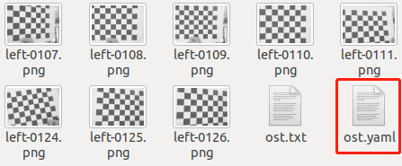
4.加载
标定摄像头生成的配置文件是YAML格式的，可以在启动摄像头的launch文件中进行加载，如下：
<launch>
<node pkg="usb_cam" type="usb_cam_node" name="usb_cam" output="screen">
......
<param name="camera_info_url" type="string" value="file://$(find 摄像头功能包)/YAML文件名" />
</node>
</launch>
5.3.4 二维码识别
二维码在生活中越来越常见，无论是共享单车还是移动支付，二维码已经得到广泛应用。ROS也提供了多种二维码识别的功能包，我们选用其中一个功能包——ar_track_alvar，来介绍二维码识别的方法。
1.安装
使用以下命令安装此功能包：
sudo apt-get install ros-melodic-ar-track-alvar
安装完成后，在目录：/opt/ros/melodic/share/中，可以找到此功能包。进入该功能包下的launch文件夹，可以看到多个launch文件，如下图所示。这些都是针对ROS官方的PR2机器人使用的二维码识别示例，后续我们将在这些文件的基础上进行修改，适配自己的机器人平台
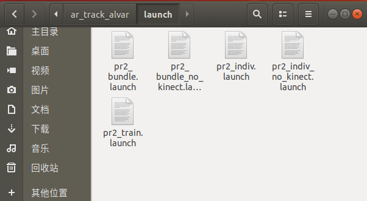
2.生成二维码
ar_track_alvar功能包提供了生成二维码标签的功能，可以使用以下命令创建对应ID号的二维码标签：
rosrun ar_track_alvar createMarker <AR_ID>
其中AR_ID的取值范围为：[0, 65535]
使用以下命令还可以查看更多的使用帮助：
rosrun ar_track_alvar createMarker
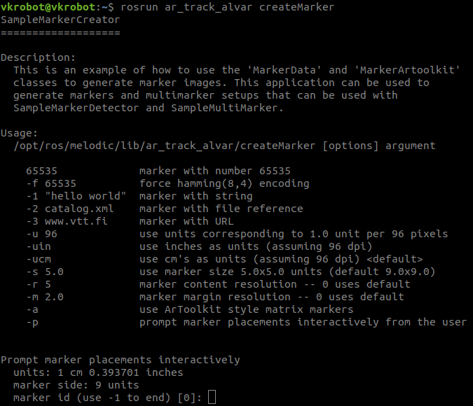
从上图可以看出，此节点不仅能使用ID号生成二维码标签，还可以使用字符串、文件名、网址等，或是使用-s参数设置生成二维码的尺寸。
3.摄像头识别二维码
ar_track_alvar功能包支持USB摄像头或深度摄像头作为识别二维码的视觉传感器，分别对应了pr2_indiv_no_kinect.launch与pr2_indiv.launch两个文件。复制pr2_indiv_no_kinect.launch文件作为参考，针对自己使用的摄像头修改设置。
<launch>
<!-- tf -->
<param name="robot_description" command="$(find xacro)/xacro $(find vkbot_description)/urdf/xacro/vkbot_with_vkarm.xacro" />
<node pkg="robot_state_publisher" type="robot_state_publisher" name="robot_state_publisher" />
<node pkg="joint_state_publisher" type="joint_state_publisher" name="joint_state_publisher" />
<node pkg="tf" type="static_transform_publisher" name="usb_cam2vkarm" args="0.0885 0 0.065 -1.57 0 -1.57 link5 usb_cam 10" />
<node pkg="tf" type="static_transform_publisher" name="ar_link2_usb_cam" args="0 0 0 1.57 -1.57 0 usb_cam ar_link 10" />
<!-- usb_cam -->
<node name="usb_cam" pkg="usb_cam" type="usb_cam_node" output="screen" >
<param name="video_device" value="/dev/vkarm_camera_raw" />
<param name="image_width" value="1280" />
<param name="image_height" value="720" />
<param name="pixel_format" value="yuyv" />
<param name="camera_frame_id" value="usb_cam" />
<param name="io_method" value="mmap"/>
<param name="camera_info_url" type="string" value="file://$(find 摄像头功能包)/标定YAML文件名" />
</node>
<!-- ar_track -->
<arg name="marker_size" default="3.0" />
<arg name="max_new_marker_error" default="0.08" />
<arg name="max_track_error" default="0.2" />
<arg name="cam_image_topic" default="/usb_cam/image_raw" />
<arg name="cam_info_topic" default="/usb_cam/camera_info" />
<arg name="output_frame" default="/ar_link" />
<node name="ar_track_alvar" pkg="ar_track_alvar" type="individualMarkersNoKinect" respawn="false" output="screen">
<param name="marker_size" type="double" value="$(arg marker_size)" />
<param name="max_new_marker_error" type="double" value="$(arg max_new_marker_error)" />
<param name="max_track_error" type="double" value="$(arg max_track_error)" />
<param name="output_frame" type="string" value="$(arg output_frame)" />
<remap from="camera_image" to="$(arg cam_image_topic)" />
<remap from="camera_info" to="$(arg cam_info_topic)" />
</node>
<!-- rviz -->
<arg name="rviz_config" default="$(find 功能包名)/config/ar_track_camera.rviz" />
<node pkg="rviz" type="rviz" name="rviz" args="$(arg rviz_config)" />
</launch>
需要修改的地方有：
- 设置world与camera之间的坐标变换
- 设置individualMarkersNoKinect节点所需的参数，主要有：订阅图像数据的话题名以及使用的二维码实际尺寸（cm）
- 启动rviz将识别结果可视化，保存rviz配置方便复用
5.4 激光雷达
5.4.1 激光雷达简介
激光雷达（Light Detecting And Ranging，简称Lidar）即光探测和测距，移动机器人在自主移动过程中，需要从环境中获取障碍物的具体位置，房间的内部轮廓等信息，这些信息是机器人创建地图、进行导航的基础数据，使用激光雷达来获取这类数据是较为常见选择。
5.4.2 激光雷达原理
激光雷达可以发射激光束，光束照射到物体上，再反射回激光雷达，目前市面上的激光雷达根据测距原理不同，可分为脉冲式（采用TOF法来实现测距）和三角式。
1.脉冲式
也称为直接式，计算公式如下：
D = c × t / 2
D为测量距离，c为恒定的光速，t为激光往返时间。脉冲式的工作原理十分简单，恒定速度乘以时间等于距离，由于是往返，所以需要除以2。
2.三角式
也称为间接式，将光源、被测物体、接收系统三点组成一个三角形光路，接收系统负责接收来自被测物体表面的散射光，并将其成像在光电探测器的敏感面上，通过光点在敏感面上的分布距离，从而计算出被测物体的距离，工作原理如下图：

5.4.3 激光雷达的使用
1.雷达连接PC
雷达通电后连接主机USB端口，并在虚拟机中做好相关设置。
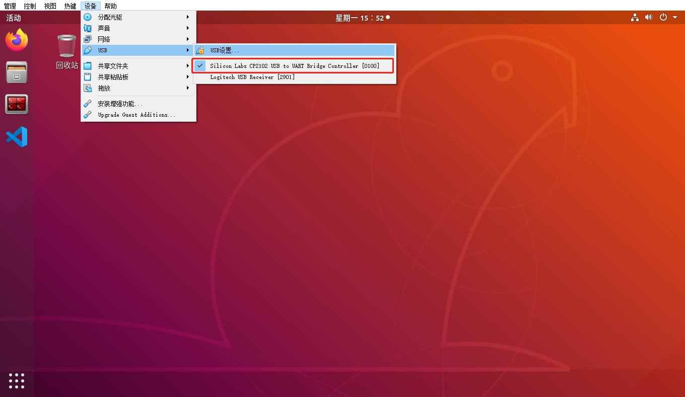
2.确认当前USB端口并修改权限
查看端口：
ll /dev/ttyUSB*
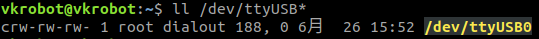
为当前用户添加权限（将用户添加进dialout组）：
sudo usermod -a -G dialout <your_user_name>
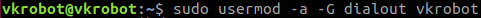
：重启虚拟机使之生效
5.4.2 激光雷达功能包安装与配置
vkrobot@vkrobot:~$ git clone https://github.com/YDLIDAR/YDLidar-SDK.git
vkrobot@vkrobot:~$ cd YDLidar-SDK
vkrobot@vkrobot:~/YDLidar-SDK$ mkdir build
vkrobot@vkrobot:~/YDLidar-SDK$ cd build
vkrobot@vkrobot:~/YDLidar-SDK/build$ cmake ..
vkrobot@vkrobot:~/YDLidar-SDK/build$ make
vkrobot@vkrobot:~/YDLidar-SDK/build$ sudo make install
vkrobot@vkrobot:~$ git clone https://github.com/YDLIDAR/ydlidar_ros_driver.git ydlidar_ws/src/ydlidar_ros_driver
vkrobot@vkrobot:~$ cd ydlidar_ws
vkrobot@vkrobot:~/ydlidar_ws$ catkin_make
vkrobot@vkrobot:~/ydlidar_ws$ echo "source ~/ydlidar_ws/devel/setup.bash" >> ~/.bashrc
vkrobot@vkrobot:~/ydlidar_ws$ source ~/.bashrc
vkrobot@vkrobot:~/ydlidar_ws$ chmod 0777 src/ydlidar_ros_driver/startup/*
vkrobot@vkrobot:~/ydlidar_ws$ sudo sh src/ydlidar_ros_driver/startup/initenv.sh
5.4.3 激光雷达数据获取与显示
roslaunch ydliadr_ros_driver lidar_view.launch
lidar_view.launch
<launch>
<node name="ydlidar_lidar_publisher" pkg="ydlidar_ros_driver" type="ydlidar_ros_driver_node" output="screen" respawn="false" >
<!-- string property -->
<param name="port" type="string" value="/dev/ydlidar"/>
<param name="frame_id" type="string" value="laser_frame"/>
<param name="ignore_array" type="string" value=""/>
<!-- int property -->
<param name="baudrate" type="int" value="230400"/>
<!-- 0:TYPE_TOF, 1:TYPE_TRIANGLE, 2:TYPE_TOF_NET -->
<param name="lidar_type" type="int" value="1"/>
<!-- 0:YDLIDAR_TYPE_SERIAL, 1:YDLIDAR_TYPE_TCP -->
<param name="device_type" type="int" value="0"/>
<param name="sample_rate" type="int" value="9"/>
<param name="abnormal_check_count" type="int" value="4"/>
<!-- bool property -->
<param name="resolution_fixed" type="bool" value="true"/>
<param name="auto_reconnect" type="bool" value="true"/>
<param name="reversion" type="bool" value="true"/>
<param name="inverted" type="bool" value="true"/>
<param name="isSingleChannel" type="bool" value="false"/>
<param name="intensity" type="bool" value="false"/>
<param name="support_motor_dtr" type="bool" value="false"/>
<param name="invalid_range_is_inf" type="bool" value="false"/>
<param name="point_cloud_preservative" type="bool" value="false"/>
<!-- float property -->
<param name="angle_min" type="double" value="-180" />
<param name="angle_max" type="double" value="180" />
<param name="range_min" type="double" value="0.1" />
<param name="range_max" type="double" value="16.0" />
<param name="frequency" type="double" value="10.0"/>
</node>
<node pkg="tf" type="static_transform_publisher" name="base_link_to_laser4" args="0.15 0.0 0.28 0.0 0.0 0.0 /base_link /laser_frame 40" />
<node name="rviz" pkg="rviz" type="rviz" args="-d $(find ydlidar_ros_driver)/launch/lidar.rviz" />
</launch>
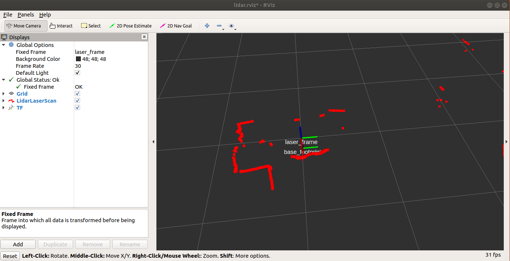